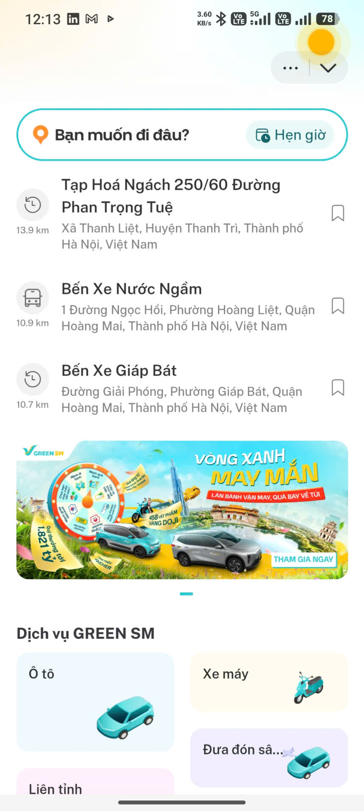
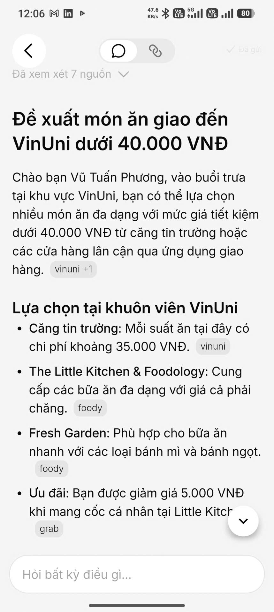
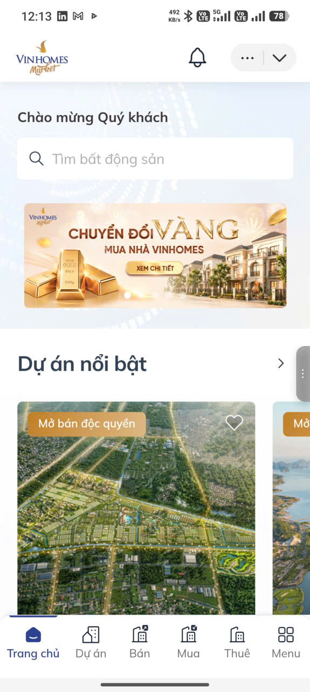
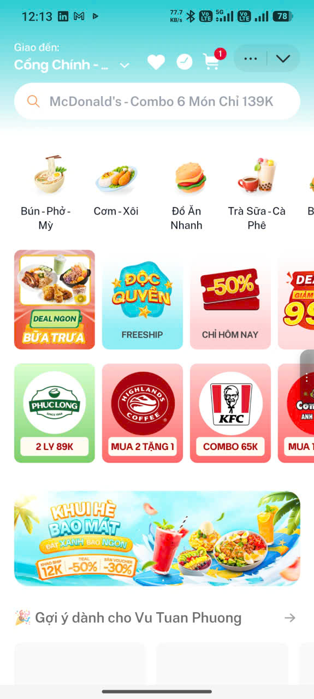
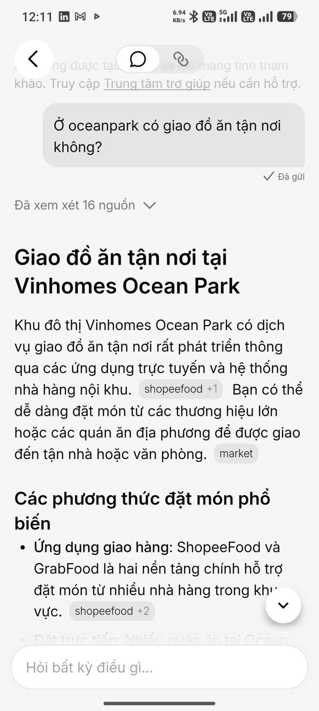
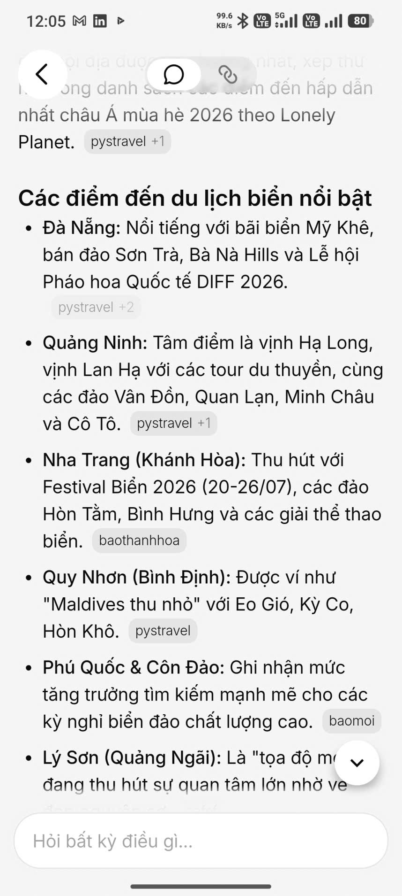

Đặt xe
GREEN SM có màn hình tìm điểm đến, lịch sử địa điểm và lựa chọn loại dịch vụ rõ ràng.
Product critique · Mini app ecosystem · AI assistant
V-App có nền tảng mạnh: đặt xe, đồ ăn, bất động sản và AI hỏi đáp cùng nằm trong một trải nghiệm. Điểm cần nâng cấp nhất là cầu nối giữa việc AI trả lời được và việc người dùng thực sự làm được một hành động tiếp theo.



Promise đọc được từ trải nghiệm không chỉ là gom nhiều mini app, mà là biến một câu hỏi tự nhiên thành hành động trong hệ sinh thái Vin.
GREEN SM có màn hình tìm điểm đến, lịch sử địa điểm và lựa chọn loại dịch vụ rõ ràng.
Mini app đồ ăn có danh mục, ưu đãi, thương hiệu và gợi ý cá nhân hóa theo người dùng.
Vinhomes Market cho phép tìm dự án, mua, bán, thuê với giao diện giống một marketplace chuyên biệt.
AI trả lời được các câu hỏi đời sống, có hiển thị số nguồn đã xem xét và chip nguồn.
Chuỗi ảnh cho thấy V-App đã bao phủ nhiều bối cảnh: bất động sản, đồ ăn, đặt xe và hỏi đáp AI.



Các câu hỏi thật cho thấy AI đã trả lời được, nhưng phần chuyển tiếp thành hành động còn thiếu.
Đề xuất món ăn giao đến VinUni dưới 40.000 VND
Ở Ocean Park có giao đồ ăn tận nơi không?
Gợi ý điểm du lịch biển hè 2026
Bốn flow dưới đây đánh dấu nơi người dùng đi mượt, nơi thiếu tự tin, nơi thất bại và nơi phải tự sửa câu hỏi.
Người dùng mở mini app và tìm được thông tin hoặc chức năng cơ bản.
Người dùng cần kiểm chứng nguồn, nhưng nguồn chưa biến thành công cụ hành động.
Người dùng đã muốn đặt ngay, nhưng không thấy đường chuyển sang mini app phù hợp.
Khi kết quả chưa đúng nhu cầu, người dùng phải tự gõ lại ràng buộc.
Path yếu nhất là: hỏi AI để tìm đồ ăn / dịch vụ, AI trả lời, người dùng muốn hành động, nhưng không có CTA rõ ràng.
Hiện chip như "Ocean Park 1, 2 hay 3?", "giao căn hộ hay văn phòng?", "ăn ngay hay đặt trước?".
Mỗi source nên có "Mở nguồn" và "Dùng nguồn này để tìm trong app" thay vì chỉ là citation.
Ví dụ: "Xem món dưới 40K gần VinUni", "Kiểm tra địa chỉ giao", "Mở mini app đồ ăn".
Hiện dòng bộ lọc đang áp dụng và các nút "Sửa địa điểm", "Tăng ngân sách", "Hoàn tác".
Nói rõ chưa xác nhận theo thời gian thực, rồi đề xuất mở mini app để kiểm tra theo địa chỉ hiện tại.
Lưu các ràng buộc đã sửa: dưới 40.000 VND, chỉ món giao được, gần VinUni.